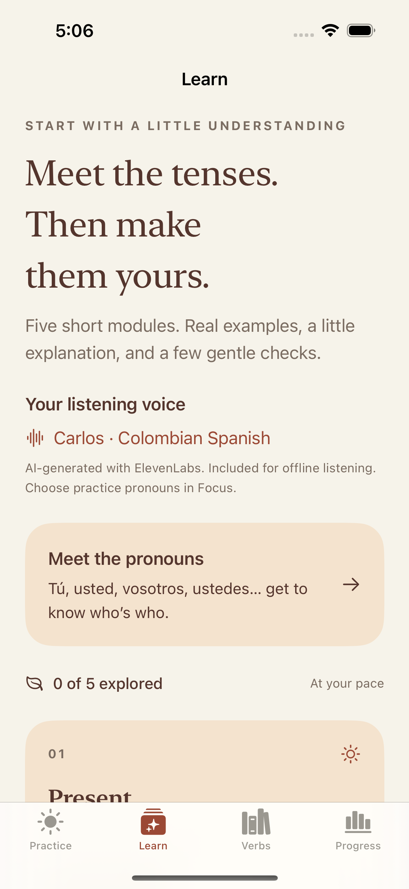
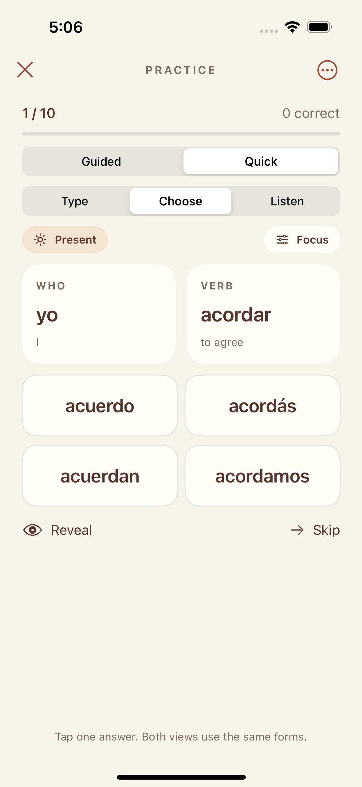
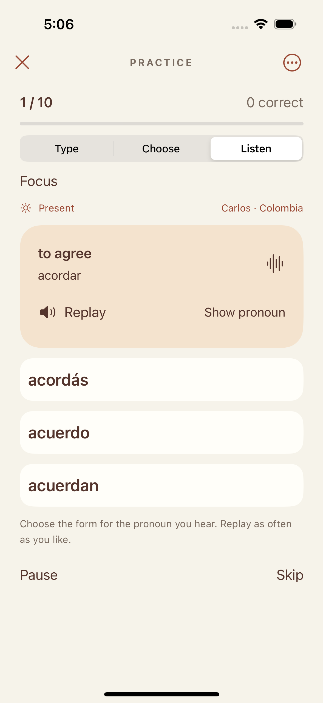
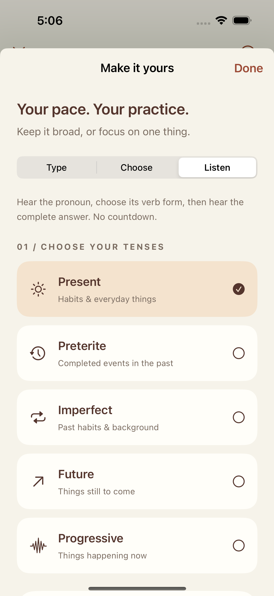

{kind=link}
{kind=link}
{kind=link}
{kind=link}
A fuller Spanish practice
Explore 96 verbs across present, preterite, imperfect, future, and progressive forms. Practice common pronouns, with optional vos and vosotros.
A little Spanish, every day
A few verb forms. A few minutes. A little more confidence. Build a daily practice with Spanish conjugations, short lessons, and a voice that brings the words to life.
Version 2.0 · Now on the App Store96 verbs. Five tense patterns. Offline pronunciation. One purchase, no subscription. $1.99 in the U.S.; local prices vary.
Get ShuFee Spanish for iPhone & iPad ↗Inside ShuFee Spanish
Start with a pattern, try a few answers, then return to the forms that need a little more practice.

Short lessons introduce the tenses, with examples you can listen to.

Choose an answer or type from memory. Accent buttons keep á, é, í, ó, ú, ü, and ñ close at hand.

Hear a pronoun, choose its conjugation, then listen to the correct answer.

Choose your verbs, tenses, and pronouns. Practice at your own pace.
Explore 96 verbs across present, preterite, imperfect, future, and progressive forms. Practice common pronouns, with optional vos and vosotros.
Clear Colombian Spanish pronunciation recordings, included in the app. Listen offline, replay freely, or press and hold a speaker button for slower playback.
Guided practice adds support; Quick keeps the round compact. Listen practice lets you replay, reveal a pronoun, or pause.
See your practice history and revisit missed forms. Your answers and progress stay on your device, with no app account to create.
Spanish with your coffee · No signup
Try these present-tense forms of tomar (to take or drink). Choose an answer to see why it fits.
I drink a coffee.
You drink a coffee.
She drinks a coffee.
Hablar (to speak) works the same way:
yo hablo · tú hablas · ella habla
Say each form aloud, then try it without looking.
Follow @shufee.spanish for little Spanish lessons ↗
Two minutes a day is a starting routine, not a promise of fluency. Save this page and come back with tomorrow’s coffee.
Support
Questions, a spelling suggestion, or something not working? Get in touch with Michael Kavalar, the creator of ShuFee.
Email ShuFee supportshufee.app@gmail.com · Please include “Spanish,” your app version, your device model, and a short description of the issue.
The guide below describes version 2.0, available now. If you’re using an earlier edition, update through the App Store.
Visit Learn to meet the pronouns and explore the five tense patterns. In Practice, start with Choose, then try Type when you’re ready to recall forms yourself. Guided adds explanations; Quick provides a compact round.
Select Listen in Practice. Hear a pronoun, then choose its conjugation. The pronoun stays hidden until you answer or tap Show pronoun. Replay has no scoring penalty; revealing the pronoun marks the answer as assisted. After feedback and the correct answer play, the next question begins. Pause stops playback and automatic progression.
The default voice is Carlos, with Colombian Spanish pronunciation. Voice pronunciation is separate from the pronouns you select: Focus includes optional vos and vosotros, so you can practice regional forms as well as the common defaults.
Yes. The pronunciation recordings are included in the app. Listening needs no internet connection, microphone permission, or account. Press and hold a speaker button to listen slowly.
Yes. Accents and ñ are part of Spanish spelling and can change a word’s meaning or tense. Use the accent buttons above the typing field when needed. Uppercase and lowercase letters are treated alike.
Use the separate sound and haptic switches in the practice menu or The little guide. Feedback sounds respect Silent mode. Explicit pronunciation playback and Listen practice can play with Silent mode on; use Pause to stop a listening round.
Practice history, reviews, lesson progress, and preferences are saved on your device. The update retains the older Spanish app’s total tries and correct answers as a legacy summary. ShuFee has no account or cloud-sync service. Removing the app may remove its progress.
Email support with your app version and the verb, tense, and pronoun you were practicing. A screenshot can help us understand pronunciation or conjugation issues.
Privacy
ShuFee Spanish privacy policy
Updated September 16, 2026 · Applies to the redesigned ShuFee Spanish 2.0 for iPhone and iPad, and its optional TestFlight testing builds.
ShuFee Spanish does not require an account and does not collect or transmit your practice answers, scores, lesson progress, or preferences to the developer. These records are stored locally on your device. The app includes no advertising or third-party analytics services.
Audio is generated during development and bundled with the app. Listening does not send your answers or other data to a voice service. The app does not record your voice or request microphone access.
You can change sound and haptic preferences in the app. Removing the app removes its local data, subject to backups managed by your device or Apple. Device backups, App Store purchases, TestFlight diagnostics, and feedback submitted through TestFlight are handled through Apple’s services and privacy practices.
If you email support, we receive your email address and the information you choose to send. We use it to respond and resolve the issue. You can request deletion of support correspondence by contacting shufee.app@gmail.com, subject to records we must retain.
This site uses no advertising, analytics scripts, or tracking cookies. GitHub Pages hosts it. GitHub may process technical information, such as IP addresses, to operate and secure its hosting service. See GitHub’s privacy statement. External links and email use are subject to the relevant provider’s practices.
The app does not knowingly collect personal information from children. If a child sends personal information in a support message, contact us to request deletion. Changes to this policy will appear here with an updated date.
For privacy questions, email shufee.app@gmail.com.